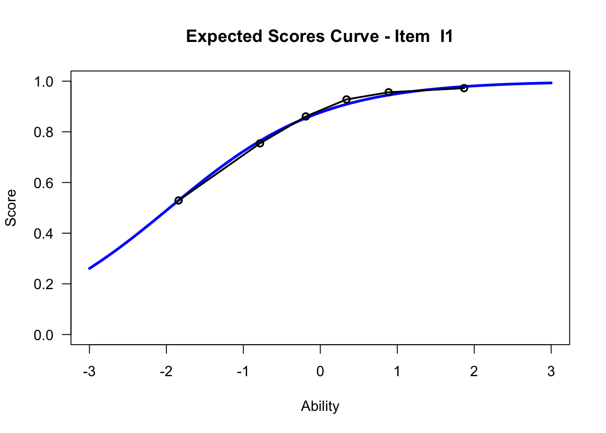
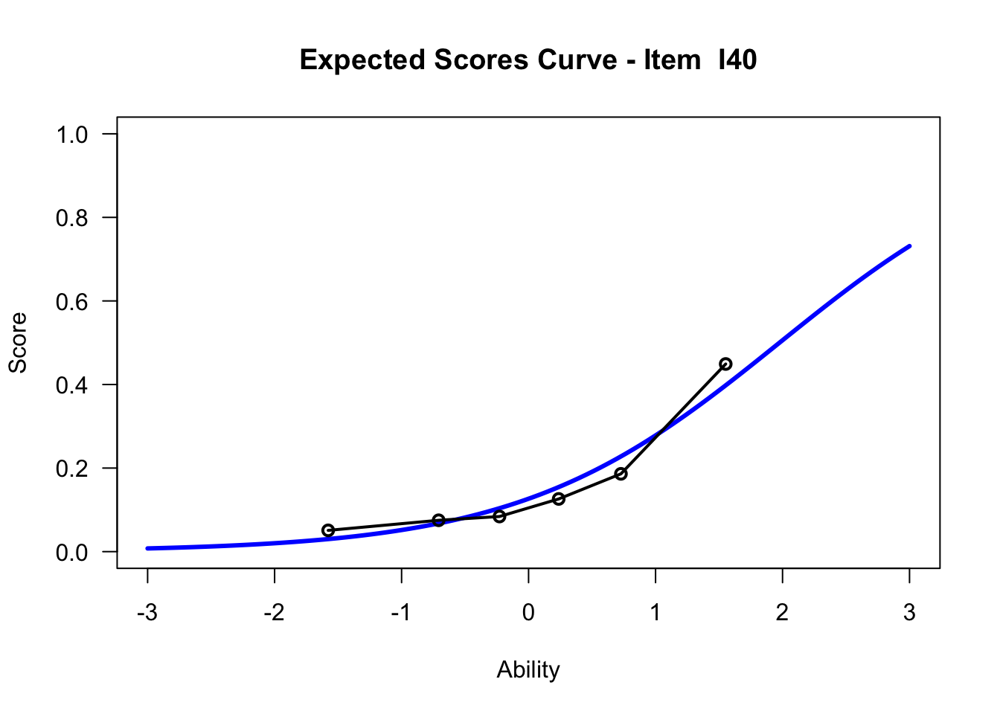

4 ICC (Item Characteristic Curve)
4.1 Input
Item Characterisitc Curves geben die Lösungswahrscheinlichkeit als Funktion der Fähigkeit der Probanden an. Dabei stellt die y-Achse die Lösungswahrscheinlichkeit und x-Achse die Probandenfähigkeit dar.
4.2 R-Befehl für Generierung ICC in TAM
Erstellung der ICC für Item 20 aus mit Gruppierung der Personenfähigkeiten in 6 Gruppen
plot(mod1, items = 20, ngroups = 6, export = FALSE) # export = FALSE verhindert separates Abspeichern der .png-Datei## Iteration in WLE/MLE estimation 1 | Maximal change 0.8281
## Iteration in WLE/MLE estimation 2 | Maximal change 0.4335
## Iteration in WLE/MLE estimation 3 | Maximal change 0.0883
## Iteration in WLE/MLE estimation 4 | Maximal change 7e-04
## Iteration in WLE/MLE estimation 5 | Maximal change 0
## ----
## WLE Reliability= 0.894
4.3 Interpretation (s. Wu et al. 2016)
Ausführungen beziehen sich auf Item 20, s. obigen Plot
blaue Kurve: Modellkurve (bei Rasch gilt Steigungsparameter der Modellkurve = 1) –> Probanden mit einer Fähigkeitsausprägung von 1, lösen das Item mit 75%iger Wahrscheinlichkeit richtig
gepunktete schwarze Kurve: Empirische Kurve –> etwa 76 % der Probanden mit der Fähigkeitsausprägung (ability) = 1 lösten das Item richtig
–> Bei diesem Beispiel liegt eine gute Passung beider Kurven vor.
4.4 Misfits
Für die Beurteilung von Items, kann die Passung der empirischen Kurve zur Modellkurve herangezogen werden. Dabei muss nicht immer die empirische Kurve gut zur Modellkurve passen –> misfits
Es wird dabei zw. overfit und underift unterschieden.
Overfit: wMNSQ-Wert (Infit) < 1; empirische Kurve steiler als Modellkurve; entspricht hoher discrimination –> item unterscheidet Probanden verschiedener Fähigkeitsausprägungen besser als andere Items im Test
Underfit: wMNSQ-Wert (Infit) > 1; empirische Kurve steiler als Modellkurve; entspricht geringerer discrimination
Es wird empfohlen, Items mit einem Overfit zu behalten und Items mit einem Underfit aus dem Test zu entfernen. Dieses Vorgehen zeigt einen Einfluss auf die EAP-Reliabilität (s. Wu et al. 2016 p. 153)
4.5 Gegenüberstellung leichtes - schweres Item
## xsi se.xsi
## I1 -1.95901708 0.06465854
## I2 -1.85702665 0.06311470
## I3 -1.74443543 0.06153710
## I4 -1.64074652 0.06019663
## I5 -1.54480023 0.05904820
## I6 -1.53436162 0.05892844
## I7 -1.34662700 0.05694173
## I8 -1.34987110 0.05697344
## I9 -1.26034689 0.05613124
## I10 -1.04688427 0.05438831
## I11 -1.02329441 0.05421784
## I12 -0.85632426 0.05313222
## I13 -0.80020663 0.05281391
## I14 -0.74473359 0.05252176
## I15 -0.52021484 0.05156219
## I16 -0.39622299 0.05118169
## I17 -0.37267520 0.05112121
## I18 -0.22981140 0.05083401
## I19 -0.10615527 0.05069507
## I20 -0.05221976 0.05066614
## I21 0.03760166 0.05066059
## I22 0.10436417 0.05069098
## I23 0.33428538 0.05102212
## I24 0.42316815 0.05124518
## I25 0.52089569 0.05155264
## I26 0.64154518 0.05202355
## I27 0.64425227 0.05203529
## I28 0.84842093 0.05307253
## I29 0.93949280 0.05363422
## I30 1.01792547 0.05416852
## I31 1.11604992 0.05490459
## I32 1.13721663 0.05507343
## I33 1.31166540 0.05660515
## I34 1.31487135 0.05663570
## I35 1.55588652 0.05919171
## I36 1.61976438 0.05995850
## I37 1.70391234 0.06102867
## I38 1.74904684 0.06163154
## I39 1.93524957 0.06434122
## I40 2.05021754 0.06620206Item 1
## Iteration in WLE/MLE estimation 1 | Maximal change 0.8281
## Iteration in WLE/MLE estimation 2 | Maximal change 0.4335
## Iteration in WLE/MLE estimation 3 | Maximal change 0.0883
## Iteration in WLE/MLE estimation 4 | Maximal change 7e-04
## Iteration in WLE/MLE estimation 5 | Maximal change 0
## ----
## WLE Reliability= 0.894
Item 40
## Iteration in WLE/MLE estimation 1 | Maximal change 0.8281
## Iteration in WLE/MLE estimation 2 | Maximal change 0.4335
## Iteration in WLE/MLE estimation 3 | Maximal change 0.0883
## Iteration in WLE/MLE estimation 4 | Maximal change 7e-04
## Iteration in WLE/MLE estimation 5 | Maximal change 0
## ----
## WLE Reliability= 0.894
Interpretation:
Probanden mit einer geschätzten Fähigkeit von 0 lösen diese beiden Items mit unterschiedlichen Lösungswahrscheinlichkeiten. Während Probanden mit einer Fähigkeitsausprägung von 0 das Item 1 mit etwa 90%iger Wahrscheinlichkeit richtig lösen, lösen diese das Item 40 mit einer etwa 15%igen Lösungswahrscheinlichkeit.
4.6 Gegenüberstellung ICC Rasch - 2PL
Item 40 Rasch
## Iteration in WLE/MLE estimation 1 | Maximal change 0.8281
## Iteration in WLE/MLE estimation 2 | Maximal change 0.4335
## Iteration in WLE/MLE estimation 3 | Maximal change 0.0883
## Iteration in WLE/MLE estimation 4 | Maximal change 7e-04
## Iteration in WLE/MLE estimation 5 | Maximal change 0
## ----
## WLE Reliability= 0.894
Item 40 2PL
## Iteration in WLE/MLE estimation 1 | Maximal change 0.3445
## Iteration in WLE/MLE estimation 2 | Maximal change 0.0677
## Iteration in WLE/MLE estimation 3 | Maximal change 5e-04
## Iteration in WLE/MLE estimation 4 | Maximal change 0
## ----
## WLE Reliability= 0.894
Deutung:
Beim 2PL Modell wird der Steigungsparamter für jedes Item frei geschätzt. Das zeigt sich unter anderem in den ICCs. Durch das Vorliegen des simulierten Datensatzes zeigt sich kein merkbarer Unterschied in den ICCs des Rasch und 2PL Modell. Dennoch sei an dieser Stelle angemerkt, dass es beim 2PL Modell durchaus zu ICCs kommen kann, die negative Steigungen aufweisen. Die Interpretation dahinter wäre: Bei steigender Probandenfähigkeit, sinkt die Lösungswahrscheinlichkeit des Items. Dies kann ein Indiz für ein nicht funktionierendes Item sein, aber ebenso ein Hinweis auf eine Mehrdimensionalität des Konstruktes. Jenes Item könnte demnach in eine andere Dimension fallen (Bühner, 2011, p.506; Chalmers, 2015, p. 216).